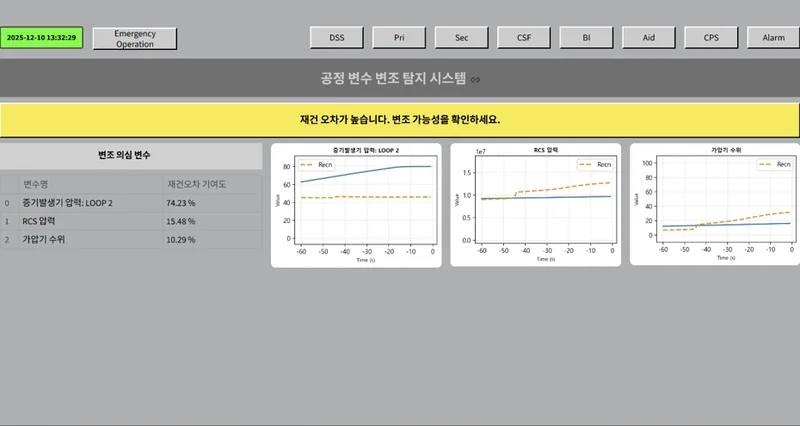

O · Operations
Human–System Interaction for NPPs 원전 인간-시스템 상호작용
Operators play a key role in nuclear power plant operation, and the human–system interface (HSI) between operators and the plant should support them in that role. This is especially important for advanced reactors, where one crew may operate multiple modules or the plant may be operated remotely. We study how AI can provide operators with processed, situation-appropriate information in digital main control rooms, supporting safer and more economical operation.
운전원은 원자력발전소 운전에서 핵심적인 역할을 담당합니다. 기계 시스템인 원자력발전소와 운전원을 잇는 HSI(Human–System Interaction)는 운전원이 그 역할을 해낼 수 있도록 뒷받침해야 합니다. 특히 한 운전조가 여러 모듈을 맡거나 원격 운전이 이루어질 수 있는 차세대 원자로에서는 이러한 지원 시스템의 중요성이 더욱 큽니다. 우리는 디지털화된 주제어실에서 AI로 가공한 정보를 상황에 맞게 제공하여, 보다 안전하고 경제적인 운전을 돕고자 합니다.
- Emergency operation support
- Event diagnosis
- Signal validation
- Cybersecurity
- Digital twins
- Autonomous operation with deep RL
